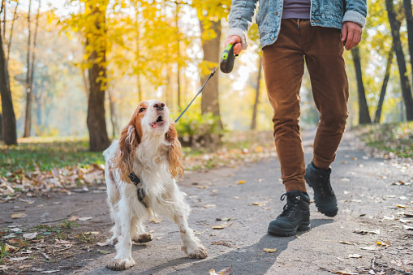

How to Teach Your Dog to Not Bark at Strangers
Written By: Author Name Nov 17 2021
There’s nothing worse than a dog that shouts at every new face that crosses their path. While they may be simply trying to protect us, this habit can be a bit embarrassing when our pups begin to bark at everyone in sight. So how do you teach your dog to not bark at strangers?
In this article, we’ll dive into the basics of teaching your dog how to mind their manners, and help you end this pesky canine habit for good! Why do dogs bark at strangers?
When our dogs bark at strangers, there are usually a few possible factors that lead to this behavior. The most common reasons that dogs bark at strangers include:
Being Territorial: Sometimes dogs can feel extremely protective of their home and their humans. Dogs may see strangers as a threat to their territory, causing them to bark at unfamiliar faces. If your dog only barks at others when they approach their home or come close to you on your walks, they are likely to be territorial.
Excitement:Sometimes our canine companions are so overwhelmed with excitement to see a new face, that they bark at the sight of strangers approaching them. If your pup is barking at strangers with a wagging tail and wiggly butt, it’s very possible that they are just overcome with joy.
Lack of Socialization with People: Sometimes our dogs bark at strangers due to not being used to their presence. An unsocialized dog tends to bark at the unfamiliar, leading to a rude introduction when they meet new faces.
Fear: Similar to lack of socialization, fear of the unknown can cause our dogs to bark and growl at any unfamiliar faces. If your dog is afraid of new people and animals, you may expect your dog to bark at any strangers that approach you or your home.
Now that you understand the possible reasons why your dog is barking at strangers, it’s time to discuss the different training methods that can put an end to this annoying habit. Since training your dog to mind their manners around strangers is essentially an obedience skill, let’s dive into the different methods to help your dog find success. Ignoring The Bad Behavior
First, it’s important to help your dog realize that they will not be rewarded with attention when they bark at and jump on strangers. You can practice this method by enlisting a friend to pose as a stranger in your home or in a spot that your dog struggles most. Make sure that the stranger knows to avoid eye contact and attention when the dog is barking and jumping. Once the dog settles down and stops the bad behavior, the stranger can then reward them with a treat. Once your dog becomes more comfortable with the process and begins to behave well around strangers, be sure to increase this reward each time they greet a stranger respectfully.
Walk Away
If your dog is having a hard time understanding that they can’t bark at strangers, it’s best to show them that they cannot be rewarded with interaction if they continue to bark. You can do this by immediately turning around and walking in the opposite direction as the approaching stranger. Doing this shows them that they do not get to engage if they continue to bark. Once your dog has successfully stopped barking, you can then offer them a treat. Repeat this process until your dog has learned that barking does not result in the reward they seek.
Distraction Method
Another beneficial way to keep your dog from barking at an approaching stranger is through distraction. Once your dog begins to bark, distract them with noise. You can do this by jangling your keys, snapping, or even using your clicker. Once your dog has stopped barking and you have gained their attention, you can instruct them to sit and remain calm. Be sure to reward your dog with a treat each time you are able to successfully distract them.
Calming the dog
Once your dog has learned to remain calm and refrain from barking when a stranger approaches them, it’s time to teach them how to sit politely as a stranger greets them. Do this by having a stranger approach you and your pup as you instruct them to sit. If they remain calm and sit on command, you can then reward them with a treat. If they do not remain seated, be sure to correct them and refrain from offering a reward until they get it right. This process is best accomplished with a stranger that is in the loop on your current training process, so you can follow your dog’s pace.
Conclusion
Just like any other command, learning to mind their manners around strangers can take time. Be sure to review the tips we discussed above, and your dog will be on their way to greeting strangers with respect in no time!